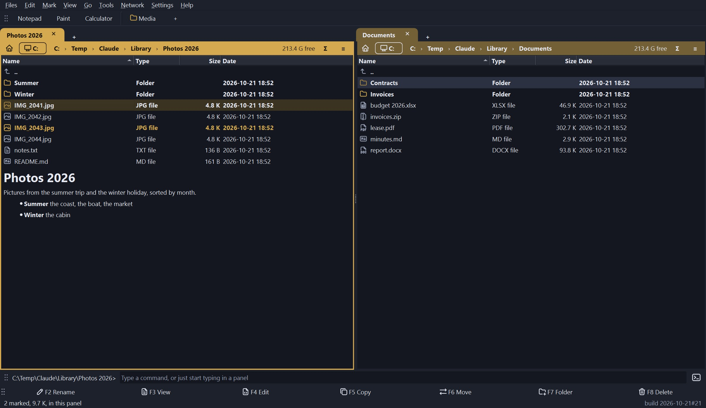
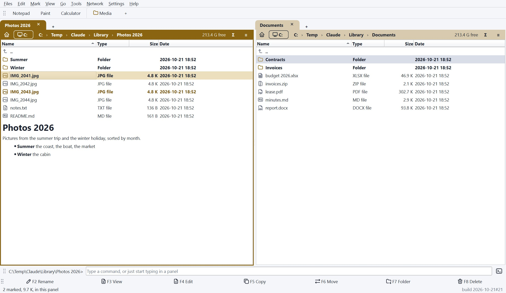
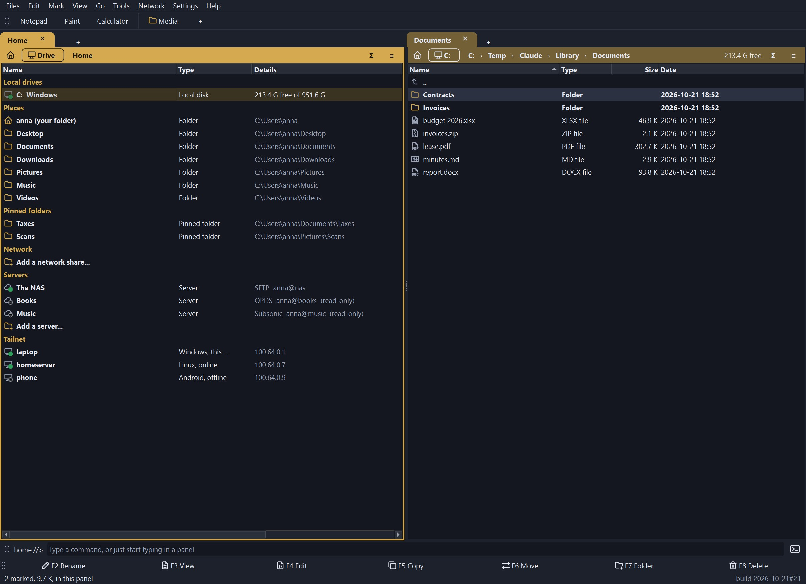

Dossier
A dual-pane file manager for Windows. Two panels, one shared selection, archives and servers shown as folders, and changes that are planned and shown before they happen.
Version 0.4, the first release. One dossier.exe, about 47 MB, nothing to install. Free, GPL-3.0-or-later.



What it does
- Two panels, tabs, one selection. Mark files in either panel; a command works on the marks of the panel you start it from. F3 view, F4 edit, F5 copy, F6 move, F7 new folder, F8 delete, drag and drop, and the clipboard.
- Changes are planned first. Every copy, move, rename and delete is worked out and shown before it happens. A name that is already taken is asked about, per file. Copies can be read back and compared. Renames and same-drive moves can be undone; deletes go to the recycle bin (not on a network drive or a server, which say so).
- Archives as folders. Open a zip, 7z, RAR and most other archives like a folder; change a zip in place, pack, unpack, and convert other archives to zip.
- Servers as folders. SFTP, SCP (for servers with a shell but no SFTP), WebDAV (Nextcloud, a NAS), FTP and FTPS. Open OPDS book catalogues (Calibre, Calibre-Web, Kavita, Komga) and Subsonic music servers (Navidrome, Airsonic) as read-only folders and copy a book or a track out. Servers are read-only until you switch writing on; host keys and certificates are shown and pinned; passwords go to the system’s password store only if you ask.
- A Home page with your drives (a light says whether each one answers), places, pinned folders, network shares, servers, and the devices of your Tailscale network, read from the Tailscale program you already run.
- Search, find duplicates, compare and synchronize, batch rename, checksums, saved selections, folder sizes.
- A viewer for text (any size and encoding, column selection), pictures with their EXIF, hex, and rendered Markdown, with the mouse wheel stepping through the pictures of a folder; an editor; and columns and a Properties box that show the tags inside music, comic and video files, plus tags you put on files yourself.
- Folder notes (
README.md,about.md) shown under the listing like a repository page, and folder layouts that remember how each folder is shown. - Your look. Light, dark or the system’s scheme, two icon sets or your own, fonts, bold on or off, and the programs bar, the function key bar and the command line can each be dragged to the top or the bottom.
Command line and AI assistants
The same program runs from a terminal, a batch file or Task Scheduler. --dry-run shows what would happen, --json gives output for scripts, nothing is overwritten unless you say so, and what is deleted goes to the recycle bin.
dossier find D:\Photos --name "*.jpg" --min-size 5M --newer 2024-01-01 --json -o big.json
dossier dups D:\Photos E:\Backup --keep oldest --delete --dry-run
dossier compare D:\Music E:\Music --sync update_right --dry-run
dossier copy D:\Music\*.flac E:\Music --on-conflict newer --verify
dossier checksum D:\Archive\* > sums.txtCommands: ls, info, find, checksum, copy, move, delete, dups, compare. See the command line guide.
dossier mcp starts a local MCP server so an AI assistant such as Claude can look at the folders you list and propose changes. It is off until you switch it on in Settings, sees only the folders you allow, and every change it proposes is shown to you in words and runs only when you press Run in the window. See the assistant guide.
Install
Download dossier.exe from the latest release and start it. It keeps its settings in your user profile in a plain dossier.ini, never in the registry. Windows 10 or 11. The exe is not code-signed, so Windows SmartScreen may ask before it starts the first time.
To run it from source: git clone https://github.com/Erlbon/dossier, python -m pip install -r requirements.txt, python -m dossier (Python 3.10 or newer).
Things to know
- There is no Linux or Mac build yet. The program is written to be portable and a Linux build is planned; the Windows exe is the only supported way to run it today.
- The servers (SFTP, SCP, WebDAV, FTP, OPDS, Subsonic) have been tested against test servers and Git’s own
sftp-server, not against many real ones. Please report what a real server does differently. - A file in a catalogue or an archive opens by being downloaded first and handed to the program Windows has for it; nothing streams.
- 7z, RAR and other archives besides zip need 7-Zip installed.
- Dossier shows the tags inside music, comic and video files but does not change them; writing tags is not in this release. For that, see the Redactor Tools.
Licence
GPL-3.0-or-later. Dossier is free and open source and will not be sold. Its function list follows an older file manager (The Next Tool, discontinued 2007); no code, text, graphics or name of that program is used. Icons are from the Tabler and Lucide sets; the full credits are in CREDITS.md.
 Pluteus
Pluteus